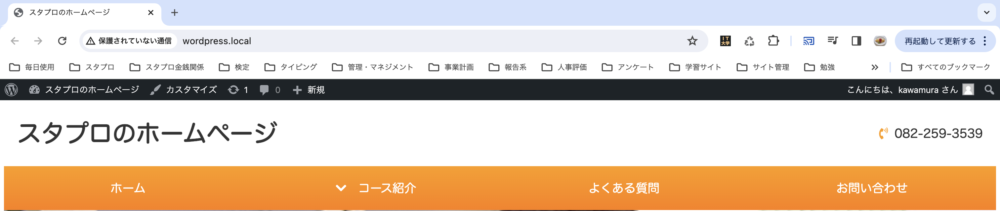

HTMLにもタグがあったように（h1タグやpタグなど）、ワードプレスにもタグがあります。
タグを使って、色んな設定を行っていきましょう！
まずは、タイトルを表示していきます。
これまではHTMLで直接タイトルを書いていましたが、ワードプレスではデータベース（目に見えない裏側で設定している所）から
タイトルの情報を引っ張ってきてそれを読み込むことでタイトルを表示させます。
①まずはタイトルを変更します。
今回は「スタプロサイト」とタイトルを変更したいので、動画のように変更してみましょう！
タイトルは管理画面から変更することが出来ます。
②変更したタイトルを取得するには「bloginfo('')」という関数を使います。
bloginfo（ブログインフォ）という関数は、ワードプレスの設定の情報を色々引っ張ってくることが出来る関数です。
シングルコーテーションの中に引数を入れることができ、「name」と入れるとサイトのタイトルを引っ張ってくることが出来ます。
以下のように記述することでタイトルが変更できるので、実際に書いてみましょう！
（index.phpの5行目と17行目に記述）
<!DOCTYPE html>
<html lang="ja">
<head>
<meta charset="UTF-8">
<!-- ↓5行目 -->
<title><?php bloginfo('name');?></title>
<link rel="icon" href="images/favicon.ico" />
<meta name="viewport" content="width=device-width, initial-scale=1">
<meta name="description" content="ここにサイト説明を入れます">
<link rel="stylesheet" href="<?php echo esc_url(get_theme_file_uri('css/style.css'));?>" >
</head>
<body class="home">
<div id="container">
<header>
<!-- ↓17行目 -->
<a href="index.html"><h1><?php bloginfo('name');?></h1></a>
<address><i class="fas fa-phone-volume"></i>082-259-3539</address>
</header>
上手く変更が出来ていれば、画像のようにタイトルが変更出来ています！
ワードプレスでは各ページで必ず書かなければならないタグがあり、
wp_head、wp_footer、wp_body_openという3つのタグになります。
wp_headはheadタグの中に記入します。
これを入れないと、後ほど出てくる「プラグイン」という設定が使えなかったり、エラーの原因になったりするので
必ず書かないといけないんだな〜くらいの認識で大丈夫です。
<!DOCTYPE html>
<html lang="ja">
<head>
<meta charset="UTF-8">
<title><?php bloginfo('name');?></title>
<link rel="icon" href="images/favicon.ico" />
<meta name="viewport" content="width=device-width, initial-scale=1">
<meta name="description" content="ここにサイト説明を入れます">
<link rel="stylesheet" href="<?php echo esc_url(get_theme_file_uri('css/style.css'));?>" >
<!-- ↓ここに記述 -->
<?php wp_head();?>
</head>
wp_footerはbodyタグの閉じタグのすぐ上に記述します。
こちらも入れておかないとバグの原因になるので、入れる必要があります。
<?php wp_footer();?>
</body>
</html>
wp_body_openはbodyタグの開始タグのすぐ下に記述します。
こちらも入れておかないとバグの原因になるので、入れる必要があります。
<!DOCTYPE html>
<html lang="ja">
<head>
<meta charset="UTF-8">
<title><?php bloginfo('name');?></title>
<link rel="icon" href="images/favicon.ico" />
<meta name="viewport" content="width=device-width, initial-scale=1">
<meta name="description" content="ここにサイト説明を入れます">
<link rel="stylesheet" href="<?php echo esc_url(get_theme_file_uri('css/style.css'));?>" >
<?php wp_head();?>
</head>
<body class="home">
<!-- ↓ここに記述 -->
<?php wp_body_open();?>
これで必要なタグを入れることが出来ました！
サイトのタイトルを画像のように「スタプロのホームページ」に変更してみましょう！
